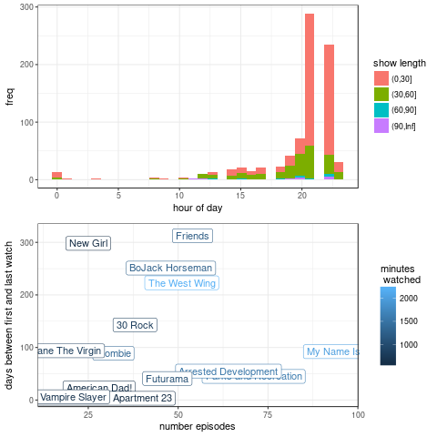

Netflix Usage
Viewing Activity
The "viewing activity" web interface is parsing json; no scraping needed!
The actual data returned incluces a lot of useful information too. Though it's not displayed, we have time-stamped view time, series title, and duration.
It appears as though duration is not view duration but the duration of the episode/movie. I think there is not a good way to see if something was only partially watched. This is inflating summary metrics.
pulling data
- https://www.netflix.com/WiViewingActivity
- inspect element -> network console
- ctrl + end (scroll to bottom to load)
- right click -> copy as curl
- increment ?pg= and can discard rest of url
- only need memclid, SecureNetflixId, and NetflixId from Cookie
- increasing page size seems to have no effect, always 100 items returned
[ ! -d netflix ] && mkdir netflix for i in {1..10}; do curl "https://www.netflix.com/api/shakti/adc049f7/viewingactivity?pg=$i" \ -H 'Cookie: memclid=XXXX; SecureNetflixId=XXX; NetflixId=XXXX' \ netflix/$i.json done
Reading in
R has some nice tools to read in the data.
jsonlitecreates a dataframe from a list of dicts automatically.lubridatemakes working with dates easy
library(jsonlite)
library(lubridate)
library(dplyr)
library(ggplot2)
library(cowplot)
flist <- Sys.glob('netflix/*json')
dlist <- lapply(flist, function(f) { fromJSON(f)$viewedItems } )
d <- Reduce(rbind,dlist)
# date column is *1000 unix epoch == dateStr
# see: as.POSIXct(d$date/1000,origin="1970-01-01")
# get only this last year
stopdate <- as.numeric(lubridate::now() - years(1)) * 1000
d.year <-
d %>%
filter( date >= stopdate) %>%
mutate(datetime = with_tz(as_datetime(date/1000),'America/New_York'),
dur.min = duration/60 ) %>%
filter( dur.min > 1) %>%
arrange(-date)
Summarizing
Plotting what hour of the day gets the most TV watching and what series are viewed the most.
s <-
d.year %>%
group_by(seriesTitle) %>%
summarise(total.min=sum(dur.min),
n = n(),
mindate = min(datetime),
maxdate = max(datetime)) %>%
mutate(span.days = as.numeric(maxdate-mindate)/(60*60*24),
rank=rank(-n) ) %>%
arrange(-n)
p.topwatch <-
s %>%
filter(total.min > 500) %>%
ggplot() +
aes(x=n, y=span.days, color=total.min, label=seriesTitle) +
#geom_point() +
geom_label() +
theme_bw() +
labs(color="minutes\n watched",
x="number episodes",
y="days between first and last watch")
p.hours <-
ggplot(d.year) +
aes(x = hour(datetime),
fill = cut(dur.min, breaks=c(0,30,60,90,Inf))) +
geom_histogram() +
theme_bw() +
labs(y='freq',
x='hour of day',
fill='show length')
plot_grid(p.hours,p.topwatch,align='v',nrow=2)
